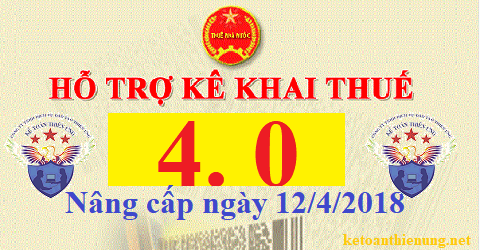

Phần mềm HTKK 4.0 mới nhất ngày 12/04/2018 của Tổng cục thuế. Đây là phần mềm hỗ trợ kê khai thuế dành cho người nộp thuế do Cục Thuế tỉnh Phú Thọ, Thái Bình các Chi cục Thuế trực thuộc quản lý.
Ngày 12/04/2018 Tổng cục thuế Thông báo về việc Triển khai thí điểm ứng dụng Hỗ trợ kê khai (HTKK) theo kiến trúc và công nghệ mới phiên bản 4.0.
TỔNG CỤC THUẾ THÔNG BÁO
V/v: Triển khai thí điểm ứng dụng Hỗ trợ kê khai (HTKK) theo kiến trúc và công nghệ mới phiên bản 4.0
(Dành cho người nộp thuế do Cục Thuế tỉnh Phú Thọ, Thái Bình và các Chi cục Thuế trực thuộc quản lý)
Để đáp ứng được xu thế phát triển công nghệ hiện tại đồng thời nâng cao hiệu quả hỗ trợ người nộp thuế (NNT), Tổng cục Thuế đã hoàn thành việc nâng cấp ứng dụng Hỗ trợ kê khai (HTKK) theo kiến trúc và công nghệ mới phiên bản 4.0. Theo đó, ứng dụng HTKK 4.0 vẫn đảm bảo đáp ứng các nghiệp vụ kê khai như phiên bản hiện tại đang triển khai (HTKK 3.8.2), đồng thời tích hợp thêm một số tính năng, cụ thể như sau:(Dành cho người nộp thuế do Cục Thuế tỉnh Phú Thọ, Thái Bình và các Chi cục Thuế trực thuộc quản lý)
- Mỗi khi có phiên bản nâng cấp, NNT không phải tải bộ cài và thực hiện thủ công như trước đây mà ứng dụng sẽ tự động cập nhật phiên bản mới khi máy tính có kết nối mạng internet.
- Tăng hiệu quả xử lý trên tờ khai khi tải hoặc kết xuất dữ liệu với số lượng dữ liệu lớn.
- Có thể dễ dàng tra cứu và xem lại tất cả các hồ sơ khai thuế đã khai trên ứng dụng
- Hỗ trợ thao tác tải và kết xuất dữ liệu từ file excel gồm 2 định dạng .xls và .xlsx.
- Giao diện được xử lý thân thiện hơn với NNT: Bổ sung tính năng tìm kiếm trong danh mục trên tờ khai (danh mục thuế tài nguyên, tiêu thụ đặc biệt, phí, lệ phí, ngành nghề kinh doanh), cho phép tìm kiếm theo tên và kỳ hiệu lực.
- Hỗ trợ chuyển đổi dữ liệu đã kê khai từ ứng dụng HTKK phiên bản 3.8.2 sang ứng dụng HTKK 4.0
Bắt đầu từ ngày 13/4/2018, khi lập hồ sơ khai thuế, tổ chức cá nhân nộp thuế do Cục Thuế tỉnh Phú Thọ, Thái Bình và các Chi cục Thuế trực thuộc quản lý sẽ sử dụng các chức năng kê khai tại ứng dụng HTKK 4.0 thay cho các phiên bản trước đây.
Lưu ý: Người nộp thuế không thuộc 2 Cục Thuế nêu trên sử dụng ứng dụng HTKK phiên bản 4.0 để kê khai sẽ không nộp được hồ sơ khai thuế qua hệ thống Khai thuế qua mạng và dịch vụ Thuế điện tử.
-> Các bạn vẫn sử dụng: Phần mềm HTKK 3.8.2
Tải phần mềm HTKK 4.0 về tại đây:

Để cài đặt được HTKK 4.0, máy tính của NNT cần đáp ứng thông số sau:
- Hệ điều hành WinXP (SP2, SP3), Win 7 trở lên… (không hỗ trợ hệ điều hành iOS, Mac).
- Máy tính có cài .NET Framework 3.5 trở lên (có thể tải bộ cài .NET Framework 3.5 tại đây).
- Nếu máy tính sử dụng hệ điều hành Win 7 trở lên không phải cài đặt .NET Framework 3.5 mà chỉ cần kích hoạt .NET Framework 3.5 đã tích hợp sẵn theo tài liệu hướng dẫn cài đặt tại đây
Mọi phản ánh, góp ý của tổ chức, cá nhân nộp thuế được gửi đến cơ quan Thuế theo các số điện thoại, hộp thư điện tử hỗ trợ NNT về ứng dụng HTKK do cơ quan Thuế cung cấp.
Tổng cục Thuế trân trọng thông báo./.
------------------------------------------
Kế toán Diệu Tâm chúc các bạn thành công
